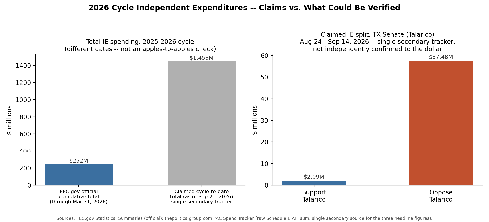

Every search for this exact figure returns the same page: thepoliticalgroup.com's "PAC Spend Tracker 2026." No second source repeats it, and the tracker discloses its own method — it sums raw Schedule E line items pulled from the FEC's public API (processed reports plus 24/48-hour notices, "deduplicated"), not a number FEC.gov itself has published as an official aggregate.
FEC.gov's own official Statistical Summary series (a genuine primary source) gives cumulative IE totals at three earlier checkpoints in this same cycle:
| As of | Cumulative IE total (FEC.gov official) |
|---|---|
| Jun 30, 2025 | $16.0 million |
| Dec 31, 2025 | $56.4 million |
| Mar 31, 2026 | $252.1 million |
| Sep 21, 2026 (claimed) | $1,452,997,175 (secondary tracker only) |
Growth to $1.45B by September is plausible in order of magnitude — IE spending is known to concentrate heavily in the months right before a federal election — but FEC has not published a statistical summary that recent, and I could not query FEC's own API to check the tracker's arithmetic: api.open.fec.gov's shared demo key was rate-limited (OVER_RATE_LIMIT) on every attempt across this session, and fec.gov's browse-data pages are a JavaScript app that returns an empty shell to a non-browser fetch.
Same origin, same caveat as above: this number appears only on thepoliticalgroup.com's tracker page, which itself warns that "the newest week is partial until filings catch up" and that "the FEC's processed totals can trail the newest filings by days to weeks." No FEC.gov page or second independent tracker was found repeating this figure.
The precise dollar figures and the "17 committees" count again trace only to the single tracker. But independent, named-source news reporting does corroborate the direction — that outside spending opposing Talarico (i.e., pro-Paxton) sharply escalated in September 2026 and dwarfs support for him:
| Committee | Reported activity | Source |
|---|---|---|
| MAGA Inc. | $10M ad buy, ~Sept 5–7, split evenly support-Paxton / oppose-Talarico | Axios, The Hill, TPR |
| America PAC (Musk) | ~$2.4M; $1.36M opposing Talarico (digital) vs. $775K supporting Paxton | AP/Yahoo wire |
| Lone Star Liberty PAC (pro-Paxton) | "$15M+" ads from Sept 1; "$19M+" cumulative by Sept 22 | Texas Tribune |
| Senate Leadership Fund | $100M commitment announced ~Sept 22 — largely after the window's Sept 14 cutoff | Texas Tribune |
| Lone Star Rising PAC (pro-Talarico) | ~$3M in September — well below opposition totals | Texas Tribune |
Summing only the opposition dollars that reporting clearly places inside Aug 24–Sep 14 lands roughly in the $20–30M range from named PACs — below the claimed $57.5M, but the claim's other 13–14 unnamed committees (of the alleged 17) could plausibly close that gap. The two are not strictly contradictory; they just cannot be reconciled to the dollar with what's publicly named.
